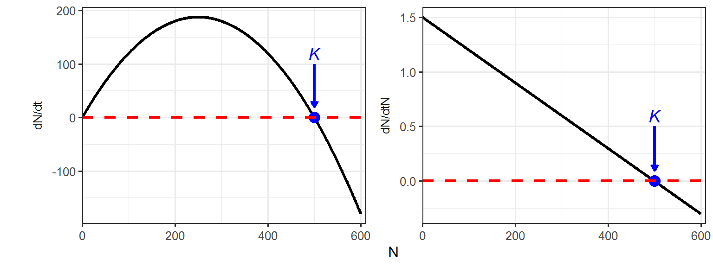

Week 3
Lecture in a nutshell
Lab demonstration
In this lab, we will solve the differential equation for logistic population growth and visualize how the population sizes change over time. Have a quick review of the lab section in Week 2.
We will also take a look at how population growth rate (\(\frac{dN}{dt}\)) and per capita growth rate (\(\frac{dN}{dtN}\)) change with population size (\(N\)).
Part 1 - Solving the logistic growth equation and visualize the results
Here is an interactive web app for the logistic growth model. Feel free to play around with the parameters/values and see how the population trajectories change.
Please select a set of parameters of your choice and reproduce the output figure you see in this app (hint: you can modify the code in Week 2).
Part 2 - The relationship between population growth rate (\(\frac{dN}{dt}\))/per capita growth rate (\(\frac{dN}{dtN}\)) and population size (\(N\))
# parameters
r <- 1.5
K <- 500
# a vector of population sizes
N <- 0:600
# calculate the population growth rates and per capita growth rates
dN_dt <- r*N*(K-N)/K
dN_dtN <- r*(K-N)/K
# organize into a dataframe
logistic_data <- data.frame(N, dN_dt, dN_dtN) %>%
pivot_longer(cols = c(dN_dt, dN_dtN),
names_to = "vars",
values_to = "values")
# plot
K_df <- data.frame(xend = c(500, 500),
yend = c(20, 0.1),
xstart = c(500, 500),
ystart = c(100, 0.5),
labels = c("italic(K)", "italic(K)"),
vars = c("dN_dt", "dN_dtN"))
ggplot(data = logistic_data, aes(x = N, y = values)) +
geom_line(size = 1.2) +
geom_point(x = 500, y = 0, size = 4, color = "blue") +
geom_hline(yintercept = 0, linetype = "dashed", color = "red", size = 1.2) +
labs(x = "N", y = "") +
facet_wrap(~vars,
ncol = 2,
scales = "free_y",
strip.position = "left",
labeller = as_labeller(c(dN_dt = "dN/dt",
dN_dtN = "dN/dtN"))) +
theme_bw(base_size = 12) +
theme(strip.background = element_blank(),
strip.placement = "outside",
legend.position = "top",
legend.title = element_blank()) +
scale_x_continuous(limits = c(0, 610), expand = c(0, 0)) +
geom_segment(data = K_df,
aes(x = xstart, y = ystart, xend = xend, yend = yend),
arrow = arrow(length = unit(0.03, "npc")),
size = 1.2,
color = "blue") +
geom_text(data = K_df,
aes(x = xstart, y = ystart*1.2, label = labels),
size = 5,
color = "blue",
parse = T)